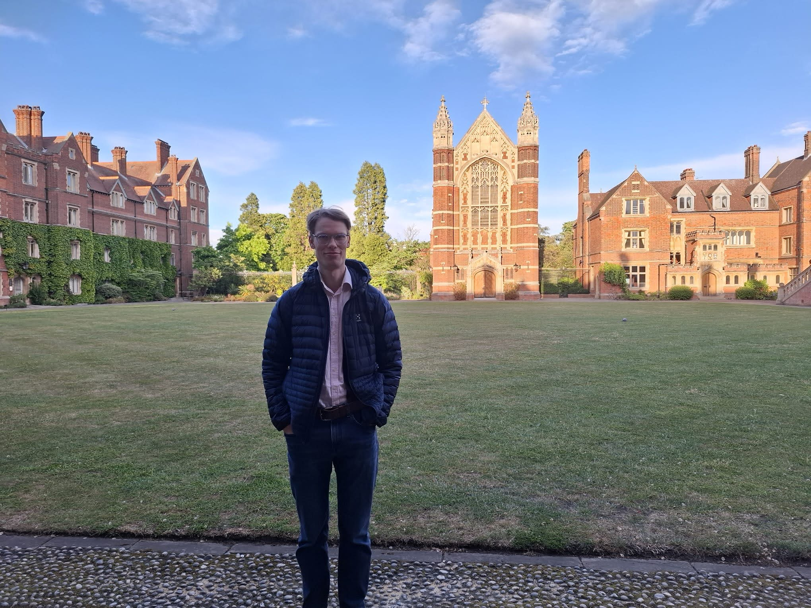

I am a PhD student at the University of Bristol supervised by Jens Marklof and Laura Monk. I am interested in quantum chaos, geometric analysis and number theory. In particular, spectral statistics on hyperbolic surfaces.